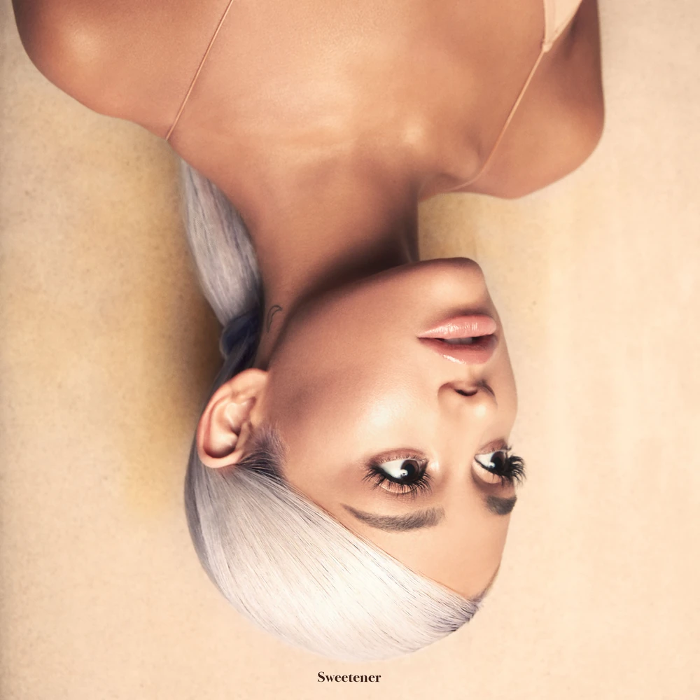
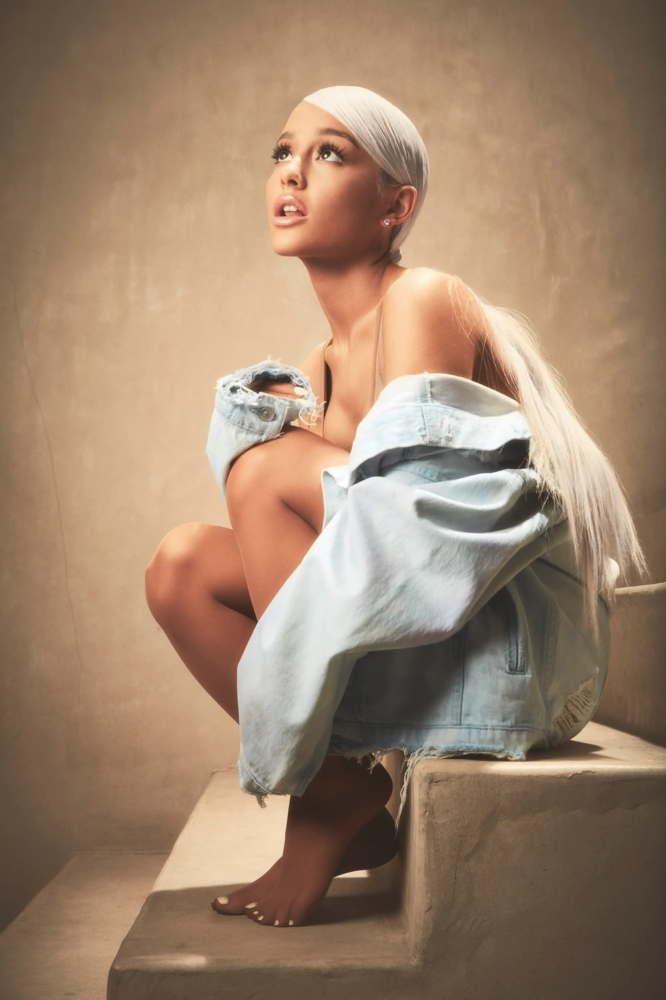
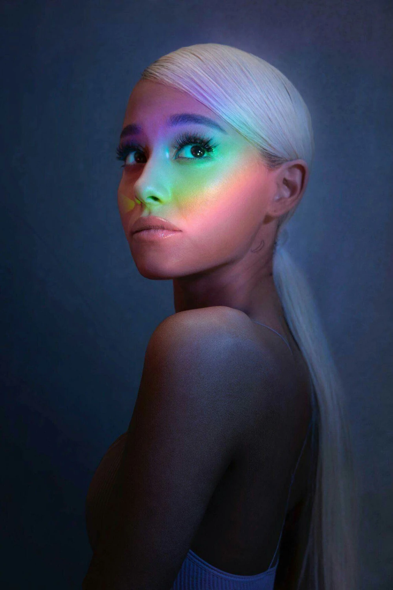
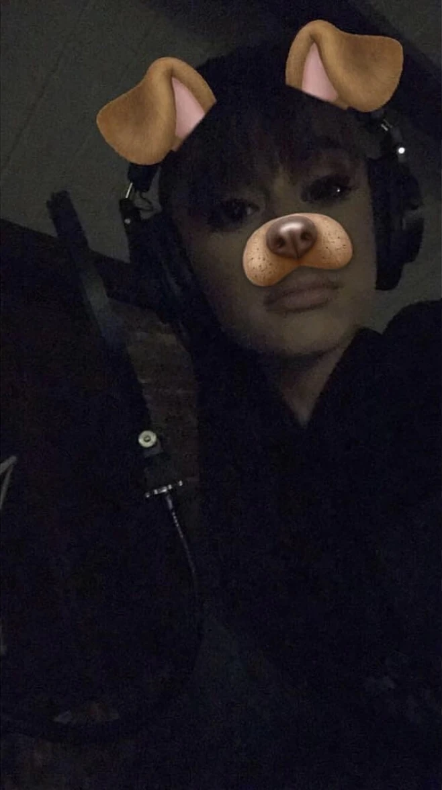
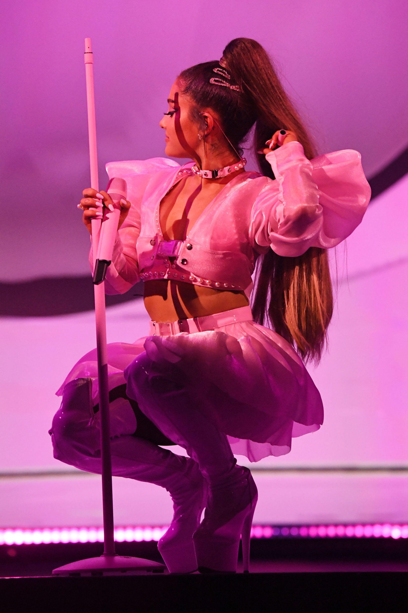

About ⋆ . ˚

Sweetener (commonly abbreviated as SW or SWT, sometimes spelt like Sweetner on physical editions) is the fourth studio album by American singer Ariana Grande. It was released on August 17, 2018, through Republic Records. Primarily a pop and R&B record, Sweetener incorporates elements of trap, neo soul, hip hop, and dance, complimented by Grande's expansive harmonies and honey-sweet vocal tone. Half of the album contains production by Grande's longtime friends and collaborators, Tommy Brown, Ilya Salmanzadeh, and Max Martin, while the other half was produced by legendary American producer, singer, and rapper Pharrell Williams. Sweetener was created between June 2016 and July 2018 and explores themes of womanhood, romance, unhealthy relationships, anxiety, and perseverance. Sweetener (commonly abbreviated as SW or SWT, sometimes spelt like Sweetner on physical editions) is the fourth studio album by American singer Ariana Grande. It was released on August 17, 2018, through Republic Records. Primarily a pop and R&B record, Sweetener incorporates elements of trap, neo soul, hip hop, and dance, complimented by Grande's expansive harmonies and honey-sweet vocal tone. Half of the album contains production by Grande's longtime friends and collaborators, Tommy Brown, Ilya Salmanzadeh, and Max Martin, while the other half was produced by legendary American producer, singer, and rapper Pharrell Williams. Sweetener was created between June 2016 and July 2018 and explores themes of womanhood, romance, unhealthy relationships, anxiety, and perseverance.
Sweetener received critical acclaim upon its release, favoring the experimental nature of its production. Some critics considered it a vital record in Grande's career due to its subject matter. It won Best Pop Vocal Album at the 61st Annual Grammy Awards, scoring Grande her first Grammy Award.
Background ⋆ . ˚
In May 2016, Grande released her third studio album Dangerous Woman (2016), which was met with generally positive reviews and commercial success. Ariana later worked on her then-upcoming fourth studio album and soon announced it later that month on social media. Throughout the year, Grande would continue to post snippets of new songs she was working on, most notably "My Way", "Sober", and "She Got Her Own" (which she later released in 2019 as part of the Charlie's Angels soundtrack under the name "Got Her Own"). Other songs were teased as well, including the album's eventual title track on November 5, 2016, when the singer posted an image of her in the studio to Instagram with the caption "sweetener".
A few days later, on November 13, 2016, Grande stated on Snapchat that she had finished her fourth album. Later, she clarified by saying, "I didn't mean to make an album, and I don't know if it's done at all, but I just have a bunch of songs that I really really like. I've been working a lot and have been creating and feeling inspired." On January 10, 2017, Grande confirmed the album's completion once again on Twitter, though she eventually removed the post.

On March 5, 2017, Grande confirmed during the soundcheck Q&A portion of her Dangerous Woman Tour show in Toronto that the songs she had previously teased ("She Got Her Own", "My Way" and "Sober") wouldn't be on the album. She later stated said that she wanted to have 10 tracks on the album. The next day, on March 6, 2017, Grande confirmed during a Q&A that she had been working with Pharrell Williams for several months.
Throughout the rest of the year, various members on Grande's team, as well as current collaborators, started to reveal information about the then-upcoming album; Scooter Braun, Grande's manager at the time, told Variety that the album has a more mature sound. In an interview with LA Times, Pharrell Williams said, "The things that [Ariana] has to say on this album, it's pretty next-level." On December 31, 2017, Grande shared a snippet from the album on her Instagram, which was later revealed to be "get well soon". The post was captioned "see you next year", and was followed by a brief social media hiatus from Grande.
On April 17, 2018, Grande ended her hiatus and announced that the album's lead single, "no tears left to cry", would be released on April 20, 2018. An accompanying music video directed by Dave Meyers premiered on YouTube that same day to critical acclaim. It explores a concept of disorientation in life, and the complexities and disillusionment of the world. The video teased some of the upcoming tracks to be featured on the album, including "R.E.M", "God is a woman", "successful", the title track, "breathin", "borderline", and the last-minute album scrap, "You".

She later appeared on The Tonight Show Starring Jimmy Fallon on May 1, 2018, where she formally announced the album's title, Sweetener, and that it would be released that summer. She further explained the meaning behind the title, "It's kind of about, like, bringing light to a situation, or to someone's life, or somebody else who brings light to your life, or sweetening the situation." In that same Jimmy Fallon appearance, Grande revealed the titles for "raindrops" and "the light is coming." In May 2018, a cover article in Time magazine, revealed that, for the first time with this album, Grande "took the lead on writing". On May 25, 2018, Grande announced that she added more songs to the album last-minute, increasing the total track count to fifteen instead of ten. Later in the month, she revealed that there would be three collaborations: Missy Elliott, Nicki Minaj and Williams.
In early June 2018, Grande announced during her set at Wango Tango that the album would be available for pre-order on June 20, and "the light is coming", featuring Nicki Minaj, would be released as a promotional single along with it. The second single, "God is a woman", was announced to be released on July 20, 2018, however, on July 12, Grande surprised fans by announcing that the single would be released the following day. Prior to the album's release, Spencer Kornhaber of The Atlantic commented that the first three singles from the album "[spark] with a sense of defiance and rattled mortality ... [a] trifecta of pseudo-spiritualism and sneaky innovation. ... Grande's music and videos radiate [intoxicating, unworried confidence]".
Recording ⋆ . ˚

All throughout 2016, Grande posted several images and videos of her in the studio to her social media accounts. Various song snippets, most notably "My Way" and "Sober", were shared as well. Towards the end of the year she shared on Snapchat that she was "almost done" with her fourth album. Though, this was later invalidated as she would continue to document verious studio sessions throughout 2017.
On December 13, 2017, old photos of Grande in the studio surfaced on Twitter. To shut down rumors about them being recent, Grande posted actual recent photos of herself working on the album on her Instagram story. On June 7, 2018, Grande revealed that "sweetener" was the oldest song on the album. She also revealed that the last song to be recorded was an interlude (later revealed to be titled "pete davidson"), in May 2018.
Grande's vocal tracking was centered on high-end large-diaphragm tube condensers, with the Neumann M 149 and Telefunken ELA M 251 serving as primary vocal microphones across many sessions, as seen in some recording footage and pictures.
Cover Art, Promo, & Tour ⋆ . ˚
On May 29, 2018, Grande confirmed that the cover would be in color and that her eyes would be open. The following month, an Instagram account for Sweetener was created and began slowly revealing the album cover as a countdown to its pre-order, with one segment being posted every 25 hours. However, on June 18, 2018, the cover art was accidentally leaked by iTunes, so the last three segments were all posted on the same day.

Referring to the upside down image of Grande in the artwork, she stated: "I showed Aaron a photo and he was sitting opposite me and he said 'I even love it upside down' and that was kind of it for me. At the time I had been feeling very 'upside down' for a while and the simplicity of that was like 'oh duh wow my bestie [is] a genius', everything clicked after that".
On August 8, 2018, Grande announced a series of promotional concerts in the United States, titled the Sweetener Sessions, which took place on August 20, 22, and 25 in New York, Chicago, and Los Angeles, respectively. The tour was in partnership with American Express. On August 28, 2018, a London concert was announced in partnership with Capital Up Close, which will take place on September 4, 2018.
On October 25, 2018, Grande announced the Sweetener/Thank U, Next Tour (later retitled to the Sweetener World Tour) in support of Sweetener as well as her fifth studio album, thank u, next (2019). The tour began on March 18, 2019, in Albany, New York, and ended on December 22, 2019, in Inglewood, California. The tour passed through North America and Europe.
Commercial Performance & Critical Reception ⋆ . ˚
Sweetener debuted at number one on the US Billboard 200 with 231,000 album-equivalent units, of which 127,000 were pure album sales. This is Grande's third studio album to debut at the top of the chart since her previous Dangerous Woman (2016) debuted and peaked at number two, while Yours Truly (2013) and My Everything (2014) both debuted at number one. 6 tracks from the album debuted on the Billboard Hot 100 in the same week: "breathin" (#22), "sweetener" (#55), "everytime" (#62), "R.E.M" (#72), "goodnight n go" (#87) and "pete davidson" (#99). The album also debuted at number 1 in the UK, Australia, Austria, Canada, Czech Republic, the Netherlands, Denmark, Belgium, Finland, Poland, Ireland, New Zealand, Norway, Scotland, Portugal, Spain, Sweden and Switzerland.

Upon release, Sweetener received critical acclaim from music critics. Reviewing for Vice, Robert Christgau called the album a "garden of sonic delights" and wrote: "Grande is pleasant in such a physically uncommon and technically astute way. Her pure, precise soprano is warm without burr or melisma, its mellow sweetness never saccharine or showy". In The New York Times, Jon Pareles said the singer's voice "can be silky, breathy or cutting, swooping through long melismas or jabbing out short R&B phrases; it's always supple and airborne, never forced." Brittany Spanos of Rolling Stone called the album "a refreshing, cohesive package. … [The producers' approach lets] Grande's easy way with trap phrasing find a home next to her flair for Broadway-esque dramatic runs"; it combines "the sensual romance of the album's plentiful love songs and the aching heartbreak of the others." Spanos concludes that it is Grande's "best album yet, and one of 2018's strongest pop releases to date. Kate Solomon of The Independent commented that with music that is "often unexpected, sometimes in a good way, it is an album by an artist in flux – trying to move forward while reluctant to fully relinquish old ideas." Some critics dubbed Sweetener an important album in Grande's catalogue.

Writing for NME, Douglas Greenwood deemed the album "[a] confident, accomplished, sometimes left-field collection of pop bangers, proving that she's not shy of experimentation." He also commented that "there are a couple of songs on Sweetener that you'd happily leave on the shelf." Similarly, in The Guardian, Alexis Petridis said that "her collaborations with Pharrell really push the boundaries. But they make the rest of this album seem formulaic." He considered the album "uneven", with its attempts to balance out what Grande called a "weird" record. Petridis felt that "the world could use more pop music as imaginative as Sweetener's highlights." The "Pharrell-half" of the album polarized fans upon release, though the other half of the album was universally praised.
In December 2018, Billboard placed Sweetener at the top of their year-end list for the best albums of 2018. Complimenting Grande's take on the sadness, they said "she didn't let her past define her, and she didn't dwell on what her future may hold, either" and praised Grande that "while most fans couldn't possibly relate to her extraordinary circumstances, Grande still ended the year seeming more approachable and human than ever". Sweetener, alongside its followup thank u, next (2019), both placed on Billboard's decade-end album's list "The 100 Greatest Albums of the 2010s" at numbers 38 and 8 respectively. They called Sweetener her most personal sound and "a radiant, pure snapshot of what stumbling upon happiness sounds like".
Sources ⋆ . ˚
Navigation Bar - Black & White Flower Image - Source: https://png.pngtree.com/png-vector/20240312/ourmid/pngtree-black-and-white-cute-flower-png-image_11935120.png
About - Sweetener Official Album Cover Image - Source: https://arianagrande.fandom.com/wiki/Sweetener?file=Sweetener_Artwork.jpg
Background - Ariana Grande in Sweetener Stair Photoshoot Image - Source: https://arianagrande.fandom.com/wiki/Sweetener?file=Sweetener_photoshoot5.webp
Background - Ariana Grande in Sweetener Rainbow Photoshoot Image - Source: https://arianagrande.fandom.com/wiki/Sweetener?file=2257371.jpeg
Recording - Ariana Grande Recording for Sweetener Image - Source: https://arianagrande.fandom.com/wiki/Sweetener?file=IMG_5797.jpeg
Cover Art, Promo, & Tour - Ariana Grande in the Sweetener World Tour - Source: https://wallpaperaccess.com/full/3406375.jpg
Commercial Performance & Critical Reception - Ariana in the music video for "Breathin" - Source: https://www.nme.com/wp-content/uploads/2018/11/ariana-grande-breathin.jpg
Commercial Performance & Critical Reception - Ariana in the music video for "No Tears Left To Cry" - Source: https://www.pluggedin.com/wp-content/uploads/2020/01/Ariana_Grande__No_Tears_Left_to_Cry__Large.jpg-2048x1174.jpeg
font "Karrilee" obtained from svg icons is licensed by CC BY 4.0
ALL OF THE WRITTEN MATERIAL ABOVE WERE COMPLETELY SOURCED AND TAKEN FROM THE OFFICIAL ARIANA GRANDE FANDOM WITH MINOR MODIFICATIONS. THE LINK TO THE WIKI IS HERE: https://arianagrande.fandom.com/wiki/Ariana_Grande